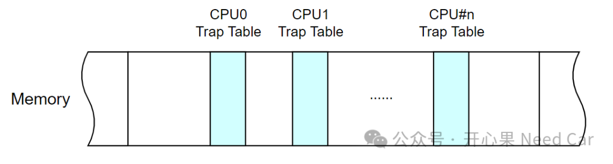
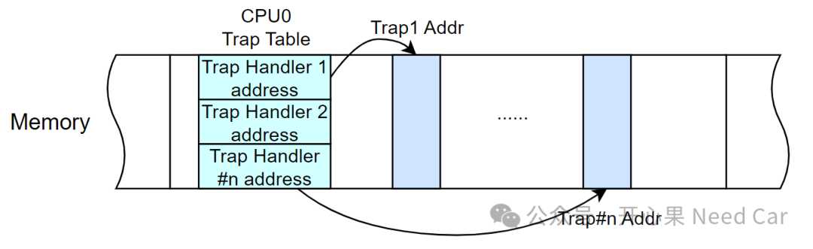
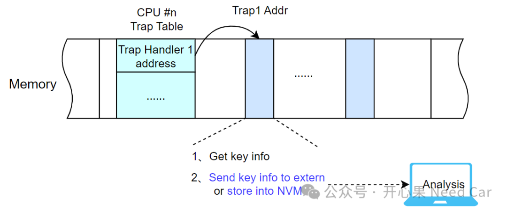

搞开发的小伙伴，在实际的开发过程中，应该偶有碰到Reset和Trap问题。如果问题在开发阶段，并且问题可以稳定复现，还好处理，连着调试器，大概率可以追到问题的具体位置。但是，如果问题发生在终端用户车上，而且是偶发的，怎么办呢？面对这样的工程场景，或者说，面对这样偶发的Trap，而且不能调试的情况下，怎么办呢？在软件上，还能做点什么呢？本文，聊聊这个话题，更确切地说：如何在Trap发生时，捕获一些关键信息，以便于后续问题排查。
目前，绝大多数控制器选用的芯片都不再是单纯的单核（Signal Core）单片机。多核异构（Heterogeneous Multi-Core）和多核同构（Homogeneous Multi-Core）单片机的使用，已经比较普遍。这里先解释多核异构和多核同构的概念。多核异构：指一个单片机包含不同类型或者不同架构的Core，比如：TC3xx既包含Tricore Core，又包含Arm Cortex M3 Core、XC800 Core。
多核同构：指一个单片机内部包含相同类型、相同架构的Core，比如：TC397包含6个Tricore，这6个Core就是多核同构。既然一个单片机包含那么多的Core，即：多个CPU。那么，Trap和CPU之间又是什么关系呢？每个CPU可以独立处理任务，那么，每个CPU也就都可能遇到Trap（陷阱），而且，可能会因为多种因素（eg：非法访问、除0等）而触发Trap。所以，一个CPU会对应一个Trap Table。每个CPU的Trap Table会占用一段内存（一般是PFlash），示意如下：

Trap与中断（Interrupt）类似，每个Trap会对应一个Trap处理程序。当Trap发生时，由Trap类别（Class）查找对应CPU的Trap Table，然后跳转到每个Trap对应的处理程序，示意如下：

提示：这点与中断类似，每个CPU包含一个中断向量表，中断向量表中可以记录对应中断例程的位置。
当程序发生Trap时，说明程序行为异常，如果要追查Trap诱发的原因，势必需要Trap发生时的一些信息。怎么做呢？既然Trap发生后可以进入Trap处理程序，我们就可以在Trap程序中做一些处理，比如：信息外发或者关键信息存储，以便于后续问题排查，示意如下：
当问题出现在终端用户车辆时，由于没有连接调试设备或者监控设备，关键信息不可能直观地输出。一般的处理措施：通过车端的对外控制器（eg：T-Box，Telematics Box）将信息传输到云端，通过云端获取这些关键信息。当然，这就牵扯到信息安全话题，获取车辆信息需要车主授权。
点击下方关注，一起聊聊Autosar/嵌入式，如果需要，联系作者进群，给你更专业的解答